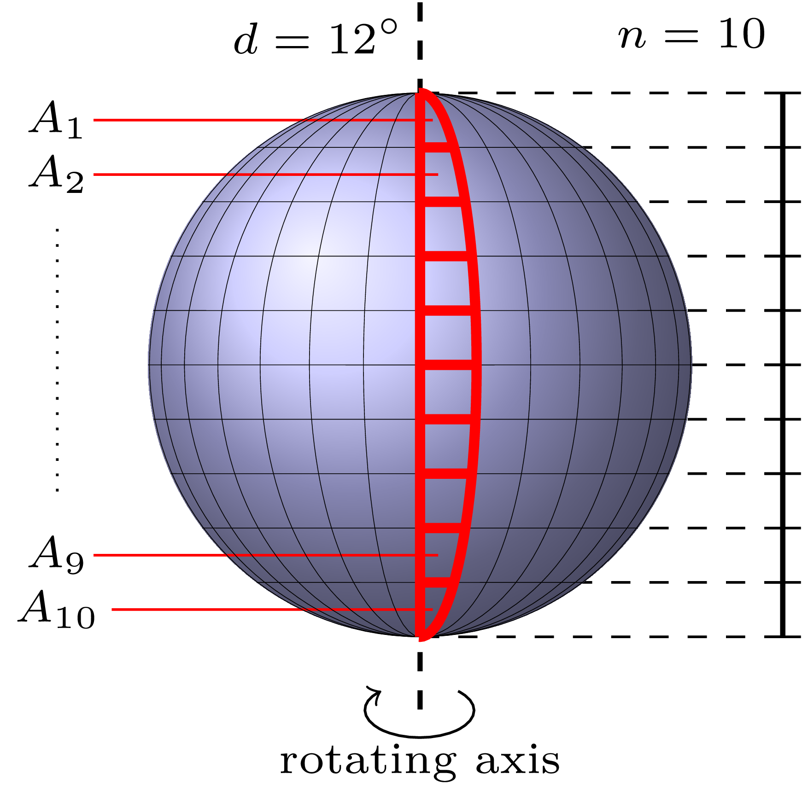

47th ICPC World Championship · Problem I
Thousands of planets outside the Solar System have been discovered in recent years. An important factor for potential life support is the availability of liquid water. Detecting water on faraway planets is not easy.
For rotating planets, a brand-new technology using relativistic quantum-polarized spectroscopy can help.
It works as follows (this is a simplified description as only three people on this planet understand how it really works).

Assume the telescope shows the planet such that its rotating axis is vertical and its equator is horizontal. Only the vertical line at the center of the image (the line that covers the rotating axis) is analyzed, because it provides the highest resolution of the planet’s surface.
The analysis proceeds in steps of d degrees. In one step, data is aggregated while the planet rotates by d degrees, so each step gives information about a slice of d degrees of the planet’s surface. The image is split into n segments of equal height, which are analyzed separately. So the slice of d degrees is partitioned into n areas A1, …, An. For each area Ai, image analysis produces a number that gives the percentage of Ai covered by water. The areas Ai for one step are highlighted in the diagram on the right.
You may assume the planet’s surface is a sphere. This means each area A2, …, An−1 is a spherical quadrilateral: it has four vertices, two sides parallel to the equator (that is, in planes parallel to the equator’s plane) and two sides on great circles through the planet’s poles, where the great circles are d degrees apart. At either pole, two of the four vertices collapse into the pole, so A1 and An are spherical triangles with only one side parallel to the equator. Due to the curvature of the surface, sides that are parallel to the equator are longer if they are closer to the equator, while sides on great circles are longer if they are closer to the poles.
The above process is repeated for the next d degrees of rotation, and so on, a total number of m times, until the whole surface of the planet has been covered (that is, md = 360 degrees). Your task is to compute the percentage of the planet’s surface covered by water from the given data.
The first line of input contains the two integers n and m (2 ≤ n, m ≤ 1000). Each of the following n lines contains m integers ai,j (0 ≤ ai,j ≤ 100 for 1 ≤ i ≤ n and 1 ≤ j ≤ m). Each column of this matrix describes the measurements for a single step, that is, a rotation by d degrees. The number ai,j is the percentage of area Ai that is covered by water in the jth step.
Output the percentage of the planet’s surface covered by water. Your answer should have an absolute error of at most 10−6.
3 7 63 61 55 54 77 87 89 73 60 38 5 16 56 91 75 43 11 3 16 20 95
51.809523810
4 3 10 10 10 10 10 10 10 10 10 10 10 10
10.000000000